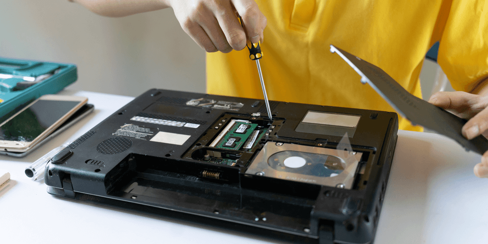

Fix your PC
Welcome to my website, here you will find 8 helpful tricks to fix your PC
Uninstall bloatware
Uninstalling bloatware or programs that you don't use is effective to improve your PC speed. These are the steps to do so:
- Search for 'add or remove programs' in the search toolbar and open it
- Check what programs from the list you don't use
- Uninstall unwanted programs by clicking the 'uninstall button'
Limit Startup Processes
When your PC starts up, it loads many programs and apps by default. Maybe you don't want those apps to start when your PC does. These are the steps to limit this apps:
- Search for 'task manager' in the search toolbar and open it
- Once the app is open, go to the 'Startup' tab
- Check what programs from the list you want to disable from starting up with Windows
- Disable the apps by clicking on them, and clicking on the 'Disable' button below
Change Power Mode to Best Performance
Many times your PC or laptop, won't use their 100% of power to save battery. If the battery is not your problem, you can adjust your PC to use best performance:
- Search for 'edit power plan' in the search toolbar and open it
- Once the app is open, check the option that says 'best performance'
- In some computers it may appear as a slider
Run Troubleshooters
A great way to analyze and speed up your PC's health is to run Windows troubleshooters to repair your PC
- Search for 'troubleshoot settings' in the search toolbar and open it
- Once the app is open, click on 'run all troubleshooters'
- The app will start loading and repair any problem in your PC, it may take some time
Change appearance in Performance options
Windows will use resources to make the system more beautiful, with animations and stylish. If you don't mind if your Windows looks great, you can disable this options to speed your PC
- Search for 'adjust the appearance and performance options' in the search toolbar and open it
- Once the app is open, you can uncheck all checkboxes to disable animations and styles
- Try to save and see how Windows looks like, you can add a few so it doesn't look too bad!
Turn off tips and notifications
Your Windows is constantly running and updating apps in the background. A great way to save resources is to disable notifications and tips
- Search for 'notifications and actions settings' in the search toolbar and open it
- Once the app is open, uncheck the 'Notifications' button
Check for viruses and spyware
Viruses and spyware can slow your PC, or even damage it. To make a full scan you can do the following
- Search for 'virus and threat protection' in the search toolbar and open it
- Once the app is open, go to 'full scan'
- Your Windows will analyze your PC for viruses and spyware, and delete them. It will take time!
Update your Windows to the last version
A great way to have a good performance is to keep your Windows updated. Developers may improve performance and fix errors in new updates. You can do this with the following steps:
- Search for 'Windows Update' in the search toolbar and open it
- Once the app is open, click the button 'check for updates'
- Your Windows will check for updates and install them. Your PC may restart and it will take time!